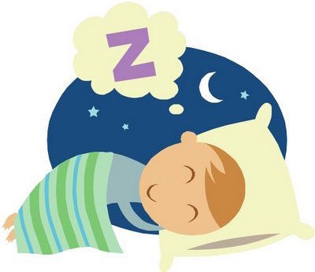

<Html>
<HEAD>
	<TITLE>Why People Need Sleep? - Why People See Dream?</TITLE>
	<STYLE type='text/css'>
      #title{
        color:black;
        font-size: 91.73px;
        font-family: Pizza Bot;
        background-color: #ffcce6;
        font-style: italic;
        position: relative;
        width:110%;
        top: 0px;
        left: 0px;
        right:0px;
    }
    #title2{
        color:black;
        font-size: 70.035px;
        font-family: Pizza Bot;
        background-color: #ffcce6;
        font-style: italic;
        position: relative;
        top: 0px;
        width:110%;
        right:0px;
        left:0px;
    }

    
		#Question1
		{color=:#ffcce6;
		font-size: 48px;
		font-family:Courier New ;
		width:110%;
}
		#way
    {color=:#ffcce6;
    font-size: 25px;
    font-family:Courier New ;
}
    #way2
    {color=:#ffcce6;
    font-size: 30px;
    font-family:Courier New ;
}
    #pic9{
      width: 300px;
      top:120;
      left: 1000px;
    }
	
nav{
   	position: relative;
   	z-index:2;
   }

	nav ul ul {
display: none;
}

/*specifies that the dropdown will display as 200 px wide blocks */
nav ul li:hover > ul {
display: block;
width: 200px;
}

/* original look of the menu before mouseover. Also need to specify that it will have a table shape. Border radius controls how round the corners are. */
nav ul {
background: #F7DC6F; 
box-shadow: 0px 0px 9px rgba(0,0,0,0.8);
padding: 0 200px;
padding-top: 0px;
border-radius: 0px; 
list-style: none;
position: relative;
display: inline-table;
}

/*This sets the width, color, alignment of the text for the dropdown items */
nav ul li {
float: left;
width: 200px;
text-align: center;
color: black;
}

/*THIS IS WHERE YOU CAN SET THE COLOR FOR THE MAIN MENU ITEM WHEN YOU GO OVER IT */
nav ul li:hover {
background: linear-gradient(top, #81DD4B 0%, #F7DC6F 40%);
background: -moz-linear-gradient(top, #81DD4B 0%, #F7DC6F 40%);
background: -webkit-linear-gradient(top, #81DD4B 0%,#F7DC6F 40%);
}

/* color for the link in the menu*/
nav ul li:hover a {
color: #fff;
}

nav ul li a {
display: block; padding: 25px 40px;

}

nav ul ul {
background: #58D68D; border-radius: 0px; padding: 0px;
position: absolute; top: 100%; 
}

nav ul ul li {
float: none; 
border-top: 1px solid #F7DC6F; /*borders between menu items */
border-bottom: 1px solid #F7DC6F;
position: relative;
padding: 0px 0px; 
text-align: center;
}

nav ul ul li a {
padding: 0px 0px;
color: #fff;
} 

/*background color when you go over the links can also change color of text here if you want */
nav ul ul li a:hover {
background: #F7DC6F;
background: linear-gradient(top, #81DD4B 0%, #F7DC6F 40%);
background: -moz-linear-gradient(top, #81DD4B 0%, #F7DC6F 40%);
background: -webkit-linear-gradient(top, #81DD4B 0%,#F7DC6F 40%);
}
</STYLE>
</HEAD>
</Html>
</STYLE> 
	</head>
<body>
<FONT id='title'>_____Why People Need Sleep?______</FONT>
<FONT id='title2'>_____________________Chloe & Nanami______</FONT>
<NAV>
  <UL>
    <LI> HOME
    <UL>
      <LI><A href='file:///Users/lipinyun/Desktop/Why%20People%20Need%20Sleep%3F.html'>Home</A></LI>
      
    </UL>
  <LI> QUESTIONS
    <UL>
      <LI><A href='WhatHappend.html'>If People Didn't Sleep, What Happend?</A></LI>
      <LI><A href='How many.html'>How Many Hours Do We Need To Sleep?</A></LI>
      <LI><A href='why Sleep is important.html'>Why Sleep Is Very Important?</A></LI>
      <LI><A href='If you can not Sleep.html'>If You Can’t Get Sleep? How Can You Do?</A></LI>
      <LI><A href='why People Dream.html'>Why people see dream?</A></LI>
      <LI><A href='Without Sleep?.html'>Then What Is The Most Longest Period Without Sleep?</A></LI>
    </UL>
  </LI>
    <LI> BIBLIOGRAPHY
    <UL>
      <LI><A href='Biblography.html'>Bibliography</A></LI>
    </UL>
</LI>
</UL>
</NAV>
        
	
 
</HEAD>
<body bgcolor="F081BA">
<BR>
<font  id='question1'>Why People See Dream?</font>
<UL>
<BODY id='way'>
  <BR>
	Every night people see dream, but at morning sometimes remember what kind of dream did people see but usually people forget what kind of dream did people see. 
<BR>
<BR>
  But do you know why people see dream when we are sleep?
</BODY>
<BODY id='way2'>
  <BR>
  <BR>
It is because dream is the imagination and stories our mind creates and stories. 
<BR>
</BODY>
<BR>
 </IMG>   
 </HTML> 